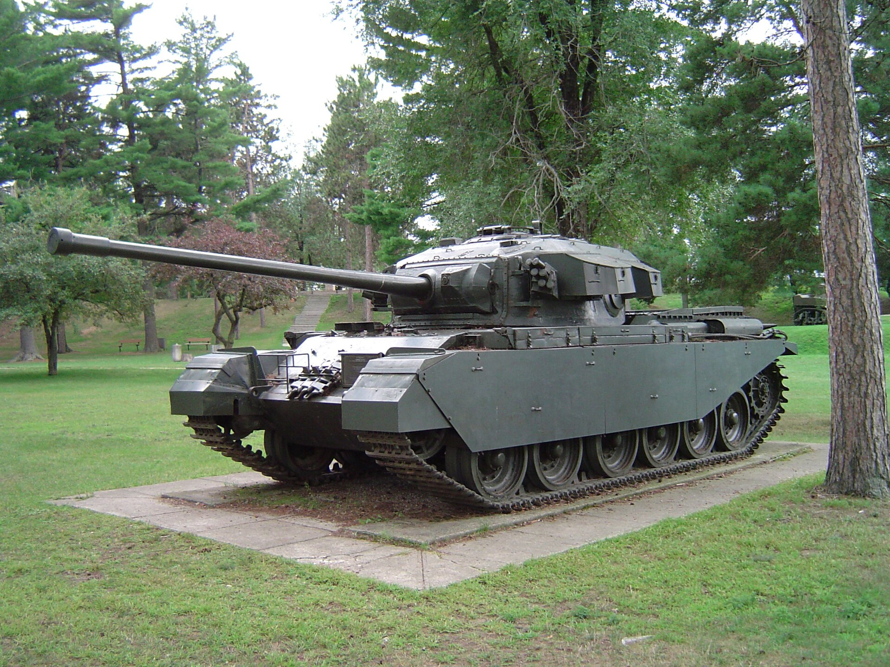
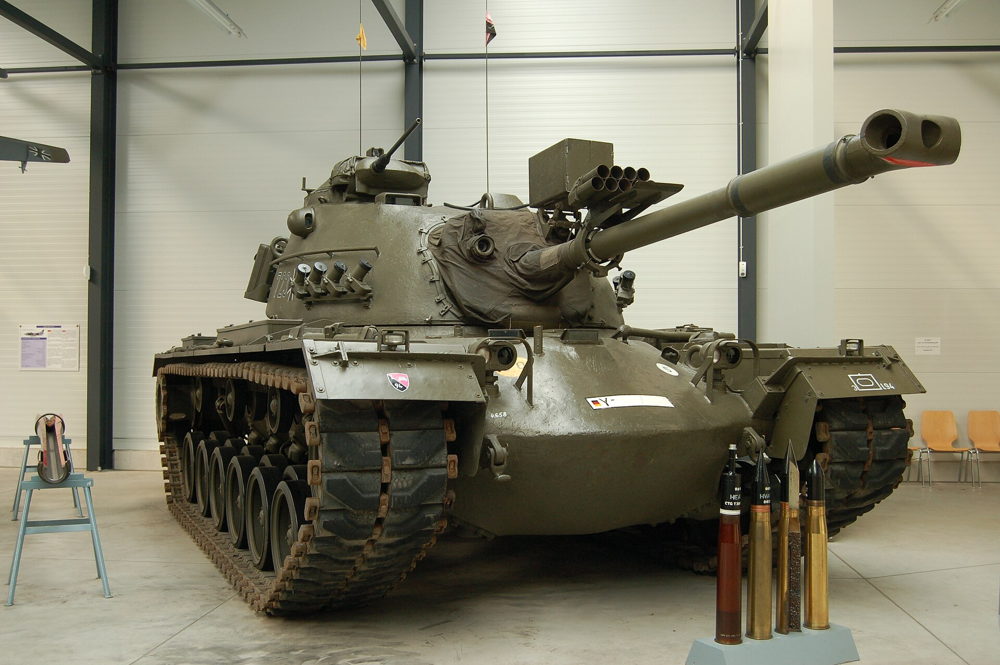
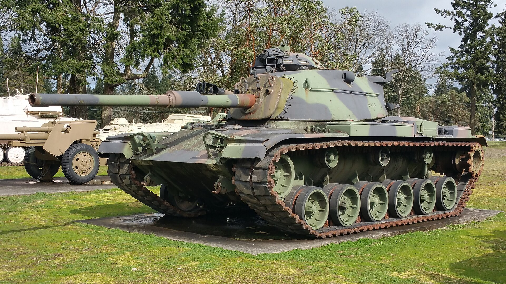
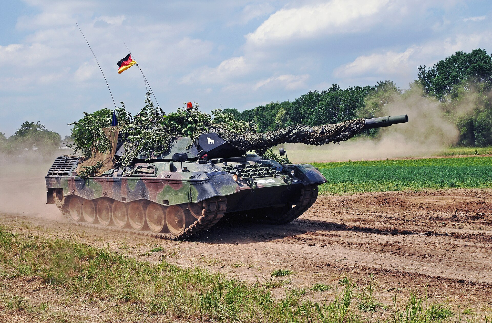
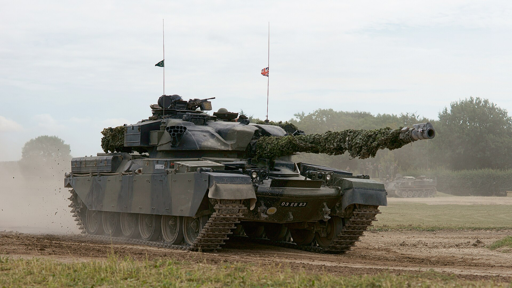
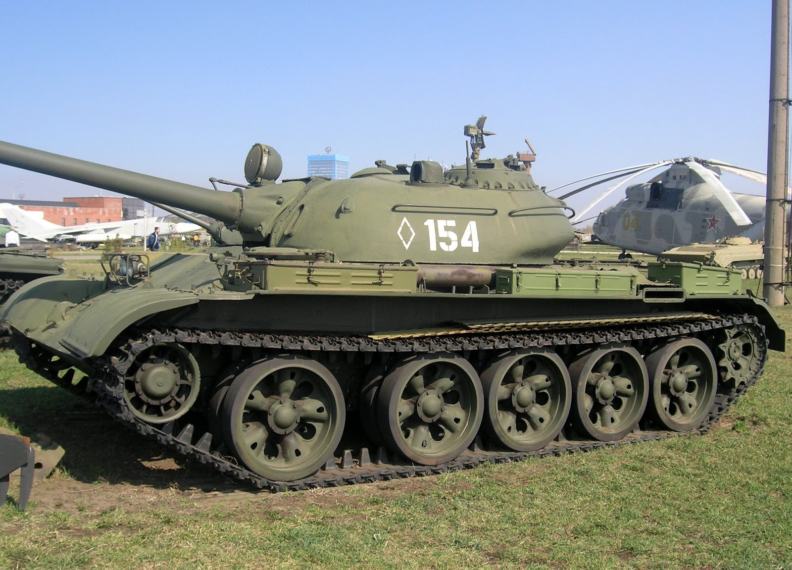
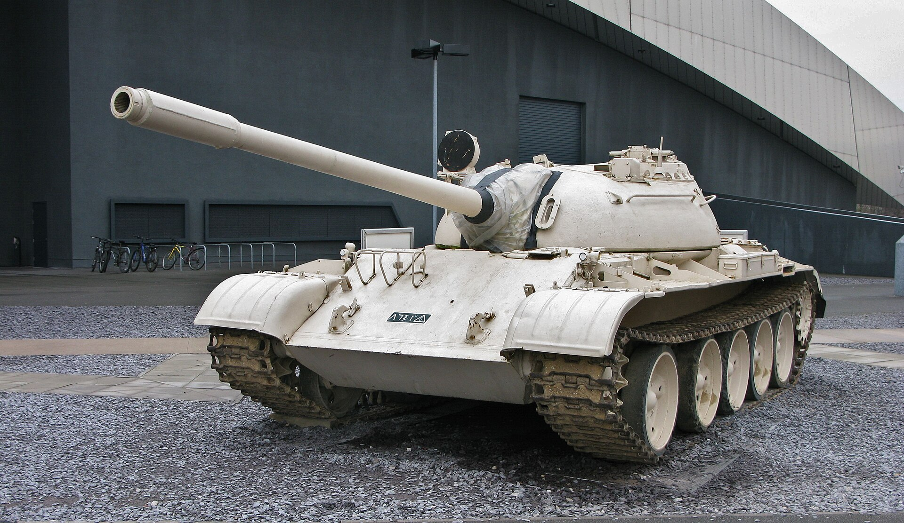
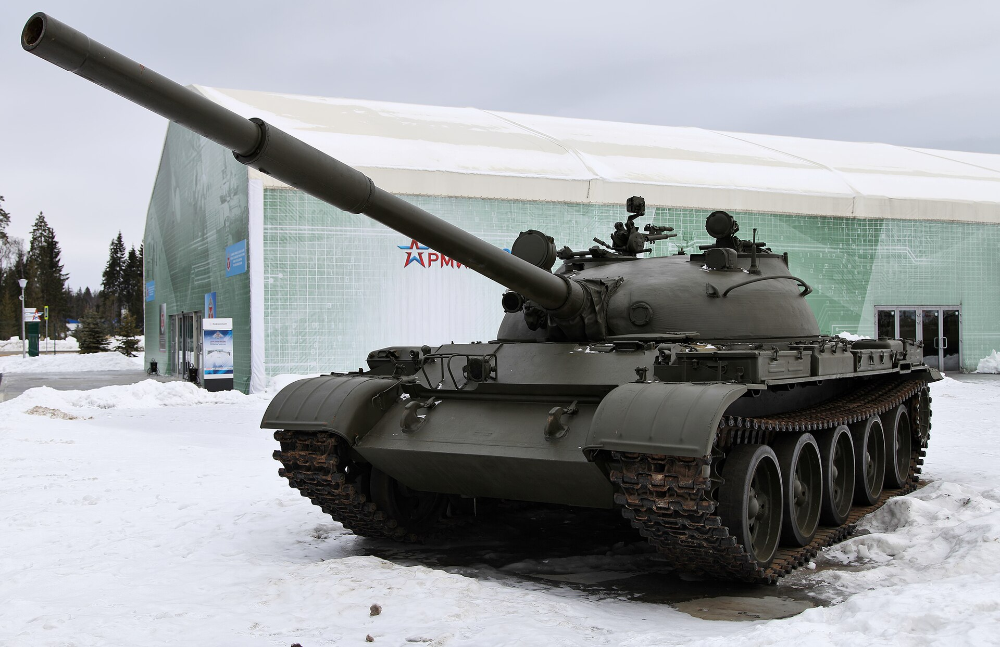
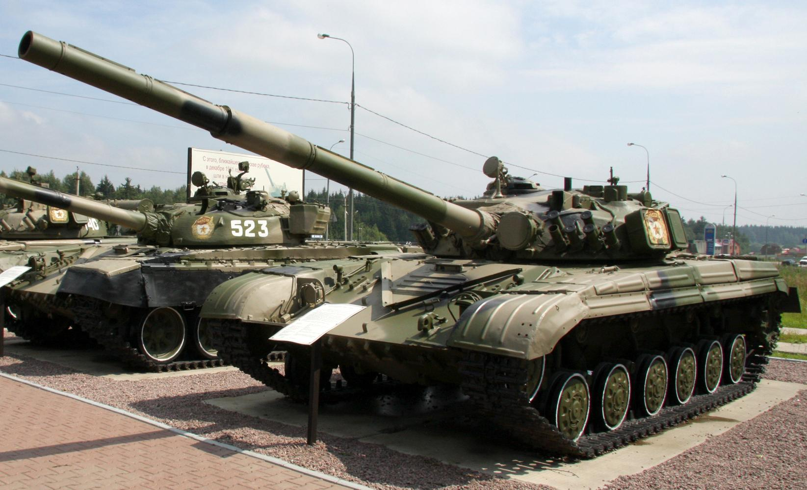
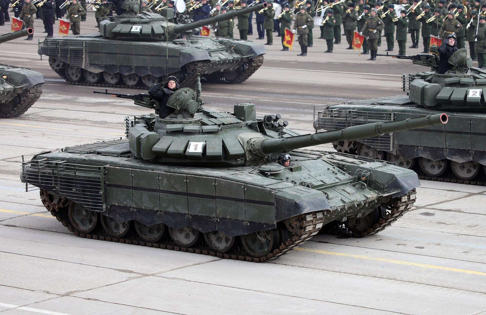

Centurion
Một mẫu xe tăng tiêu biểu được giới thiệu trong giai đoạn Chiến tranh Lạnh.
Sự phát triển của xe tăng trong thời kỳ đối đầu giữa NATO và Khối Warszawa.
Trong giai đoạn Chiến tranh Lạnh, xe tăng tiếp tục phát triển theo nhiều hướng. Website tập trung giới thiệu các mẫu tiêu biểu của NATO và Khối Warszawa, đồng thời cho thấy sự chuyển biến ngày càng rõ của khái niệm Main Battle Tank (MBT).
Một số xe tăng tiêu biểu.

Một mẫu xe tăng tiêu biểu được giới thiệu trong giai đoạn Chiến tranh Lạnh.

Xe tăng tiêu biểu thuộc nhóm được giới thiệu của NATO.

Một trong các mẫu MBT tiêu biểu của Mỹ thời Chiến tranh Lạnh.

Mẫu xe tăng tiêu biểu của Tây Đức.

Một mẫu xe tăng được liệt kê trong nhóm NATO.
Các dòng xe tăng tiêu biểu.

Một trong những dòng xe được giới thiệu của Liên Xô.

T-55 phát triển từ dòng T-54 và trở thành một trong những mẫu xe tăng được sử dụng rộng rãi.

Một mẫu xe tăng tiêu biểu trong nhóm Khối Warszawa.

Một mẫu xe tăng được liệt kê trong giai đoạn Chiến tranh Lạnh.

Một mẫu xe tăng tiêu biểu của Liên Xô trong danh sách của website.